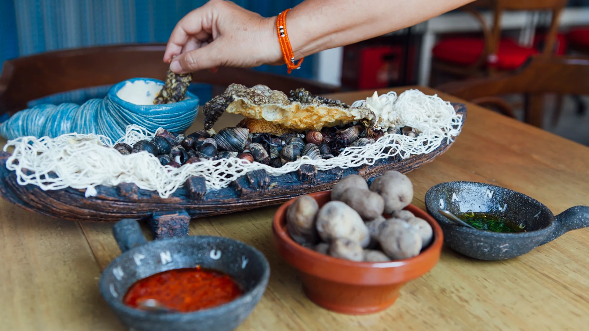

En la pintoresca localidad de Tegueste, Tenerife, se está gestando un emocionante evento culinario que promete deleitar los paladares y celebrar la rica herencia gastronómica de la isla.
Seis talentosos cocineros locales están listos para competir en el Concurso de Cocina de la Romería de San Marcos, donde mostrarán sus habilidades culinarias y compartirán sus recetas tradicionales con la comunidad.
La atmósfera estará impregnada de aromas tentadores y risas animadas mientras los visitantes exploran los puestos de comida, disfrutan de la música en vivo y participan en actividades culturales. El evento no solo será una oportunidad para degustar platos exquisitos, sino también para sumergirse en la rica cultura y el espíritu festivo de Tegueste. Desde familias locales hasta turistas curiosos, todos se unirán en un ambiente de celebración y camaradería, creando recuerdos duraderos en torno a la cocina canaria y la tradición de la Romería de San Marcos.
-
Diversidad de sabores canarios:
Desde las papas arrugadas con mojo hasta el gofio amasado y el sancocho, los participantes presentarán una amplia variedad de platos tradicionales de Tenerife. Cada chef aportará su propia interpretación única de los clásicos de la cocina canaria, destacando la diversidad y la riqueza de los sabores de la isla.
-
Innovación y creatividad culinaria:
Aunque se trata de platos tradicionales, los chefs tendrán la oportunidad de demostrar su ingenio culinario al presentar versiones únicas y creativas de las recetas clásicas. Desde ingredientes frescos de la huerta local hasta técnicas de cocina modernas, la innovación estará en el centro del escenario.
-
Orgullo local y espíritu competitivo:
La competencia será intensa, pero también estará impregnada de un profundo sentido de orgullo local y camaradería entre los participantes. Cada chef representará a su comunidad con pasión y determinación, dispuesto a mostrar lo mejor de la cocina de Tenerife y llevarse el título de campeón del concurso.
Algunos puntos a destacar de un evento como este son:
El alcalde de la localidad donde se celebra el concurso, en una entrevista para la televisión regional, conversó sobre la importancia de actividades como esta y destacó su entusiasmo de ser partícipe de la misma este fin de semana:
"El concurso de cocina de la Romería de San Marcos es una oportunidad para celebrar nuestra rica herencia culinaria y reunirnos como comunidad en torno a la mesa. Estoy emocionado de ver a nuestros talentosos chefs locales competir y compartir su amor por la cocina de Tenerife con todos nosotros"
Juan Pérez, Alcalde de Tegueste.
Prepárense para un festín de sabores y una competencia culinaria emocionante en la Romería de San Marcos, donde la pasión por la cocina canaria se mezcla con el espíritu festivo de la comunidad teguestera.
"En el concurso cada plato es un homenaje a nuestra tradición culinaria, cada chef es un guardián de nuestros sabores ancestrales y cada bocado es un viaje sensorial que nos conecta con nuestras raíces y nuestra comunidad."